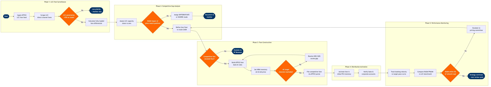

LCC Competitive Pricing Strategy
Network Planning & Scheduling › Revenue Management · 16 L4 steps · 5 phases · 6 decision gates · Updated 2026-03-18 19:22
📊
Process Flow Diagram (BPMN)

📋
L4 Process Steps
| Step | Step Name | Role / Swim Lane | System | Input | Output | KPI | Dec? | Exc? |
|---|---|---|---|---|---|---|---|---|
Phase 1 1.1 |
Ingest LCC published fares from ATPCO feed | Revenue Analyst | ATPCO Automated Competitive Intelligence (ACI) | Daily ATPCO fare-change notification feed across all GDS-filed LCC fares | Structured LCC fare dataset by O&D pair, cabin, booking class, and advance purchase tier | Fare update latency ≤4 hours from ATPCO filing; coverage ≥80% of LCC-filed fares | N | N |
| 1.2 | Scrape LCC direct-channel fares via fare shopping | Revenue Analyst | Sabre PRISM Competitive Fare Shopping | LCC-overlap route list and 90-day departure date range | LCC web-fare matrix by route, departure date, and fare class including ancillary fee schedule | Shopping coverage ≥95% of LCC-overlap routes completed within 24 hours; intraday refresh on routes with >50 weekly LCC departures | N | Y |
| 1.3 | Flag routes exceeding LCC penetration threshold | Revenue Strategy Manager | Amadeus SkyCAST | LCC fare matrix combined with OAG Traffic Analyser market share data | Priority route list with LCC threat tier classification (High / Medium / Low) for current and next 90-day window | 100% of routes with LCC market share >25% flagged and tier-assigned within 48 hours of data refresh | Y | N |
Phase 2 2.1 |
Calculate fully-loaded fare differential vs LCC | Pricing Analyst | Amadeus Revenue Management (NRM) | Own lowest available fare per O&D; LCC base fare plus published ancillary fee schedule from Step 1.2 | Net fare gap report showing base-fare delta and fully-loaded delta (bag + seat assignment + change fee) per route | Fully-loaded fare gap calculated within 2 hours of trigger event; model accuracy ±5% vs actual LCC checkout price | N | Y |
| 2.2 | Assess LCC seat capacity deployment on overlap routes | Network Revenue Analyst | OAG Schedules Analyser | LCC published schedules from OAG; own schedule from Amadeus SkyWORKS | Capacity share report showing seats, weekly frequencies, and ASK split by carrier for each contested O&D | Capacity share delta vs prior 4-week period reported weekly; >10% capacity increase by any LCC triggers immediate alert | N | N |
| 2.3 | Classify route competitive response mode | Revenue Strategy Manager | Amadeus Revenue Management (NRM) | Fare gap report from Step 2.1; capacity share report from Step 2.2; route RASM from Amadeus SkyCAST | Route-level response mode classification: MATCH / STIMULATE / DIFFERENTIATE / IGNORE, with documented rationale and RASM impact estimate | 100% of High-tier LCC routes assigned response mode within 72 hours; response mode reviewed every 21 days | Y | N |
Phase 3 3.1 |
Define route fare floor against unit cost recovery | Pricing Strategy Manager | SAP S/4HANA Finance (FI/CO) | Route-level CASM (cost per available seat mile) from finance cost allocation module; load factor target from SkyCAST forecast | Minimum acceptable fare floor per route and cabin class, approved by Finance | Fare floor covers variable cost per seat at target load factor ≥100% on 100% of routes; floor breach rate <2% of all filed competitive fares | Y | Y |
| 3.2 | Construct ATPCO fare basis codes and rule conditions | Pricing Analyst | ATPCO Fare Management Portal | Approved fare level and floor from Step 3.1; target O&D pairs; advance purchase and change fee structure | Draft fare record with Fare Basis Code and complete ATPCO Category 3, 5, 14, 15, and 16 rule set | Fare rule filing completeness ≥98% (zero missing ATPCO categories); internal peer review completed within 4 hours of draft creation | N | Y |
| 3.3 | Configure NRM inventory availability and bid-price thresholds | Revenue Management Analyst | Amadeus Revenue Management (NRM) | Approved fare record; booking class assignment; O&D demand forecast from SkyCAST | Updated booking class authorization levels (AU) and bid-price thresholds in NRM for all affected O&D pairs | Inventory control update applied within 2 hours of fare approval; AU accuracy ±2 seats vs modelled optimum at D-90 | N | Y |
| 3.4 | Apply channel-specific fare availability configuration | Pricing Analyst | NDC API Gateway | Approved fare record; channel distribution matrix (GDS / NDC / direct web) | Channel-differentiated fare availability configuration in NDC API Gateway and Amadeus Altéa PSS | NDC-exclusive fares available within 4 hours of ATPCO filing; GDS display parity ≥95% across Sabre, Travelport, and Amadeus within 8 hours | Y | Y |
Phase 4 4.1 |
File competitive fare in ATPCO and validate GDS mirror | Pricing Analyst | ATPCO Fare Management Portal | Peer-reviewed fare record and complete rule set from Step 3.2 | ATPCO filing confirmation with batch-processing timestamp; GDS mirror latency report across Sabre, Travelport, and Amadeus | Fare live in all three GDS within 8 hours of ATPCO filing; zero Category 15 validation errors; filing confirmed in ATPCO audit log | N | Y |
| 4.2 | Activate competitive fare in Amadeus Altéa PSS | Revenue Management Analyst | Amadeus Altéa PSS | ATPCO filing confirmation from Step 4.1; NRM authorization levels from Step 3.3 | Fare live in Altéa PSS for direct and indirect bookings; PSS-NRM inventory sync confirmed | PSS activation within 1 hour of ATPCO confirmation; zero inventory sync discrepancies between Altéa and NRM authorization levels | N | Y |
| 4.3 | Issue pricing action bulletin to sales and accounts | Revenue Strategy Manager | Salesforce CRM | Activated fare details; competitive context briefing from Step 2.3 response mode classification | Pricing action bulletin distributed via Salesforce CRM to Sales, Agency Relations, and Corporate Account teams | Bulletin issued within 2 hours of fare activation; 100% of key account managers and top-50 agency contacts notified; read-receipt tracked in Salesforce | N | N |
Phase 5 5.1 |
Monitor booking velocity on LCC-contested routes | Revenue Management Analyst | Amadeus Revenue Management (NRM) | Daily booking curves by route, fare class, and departure date from NRM booking pace module | Booking velocity report versus LCC-free baseline curve; stimulation delta by departure date and O&D | Booking pace ≥95% of target curve by D-14; seat load factor ≥83% at D-7 on High-tier LCC routes | N | Y |
| 5.2 | Compare RASM and PRASM against LCC benchmark | Revenue Strategy Manager | AWS Redshift | Booked revenue and ASMs flown per route; LCC benchmark fares from ATPCO ACI prior-period dataset; Amadeus SkyCAST RASM actuals | RASM versus benchmark scorecard with revenue gain or loss attribution by route and competitive response mode | RASM on contested routes within 5% of network average; PRASM improvement >2% versus pre-strategy baseline after 21-day observation window | Y | N |
| 5.3 | Trigger strategy review or escalate to pricing committee | Revenue Strategy Manager | Amadeus Revenue Management (NRM) | RASM scorecard from Step 5.2; booking velocity report from Step 5.1; updated LCC fare intelligence from Step 1.1 | Strategy continuation approval, or pricing committee escalation package with revised response mode recommendation and fare adjustment proposal | Strategy review cycle completed within 21 days of activation; escalated routes resolved by pricing committee within 5 business days; route RASM restored to within 5% of network average within 45 days | Y | Y |
📋